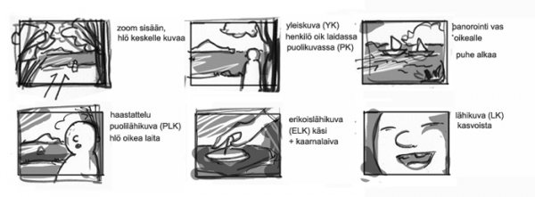
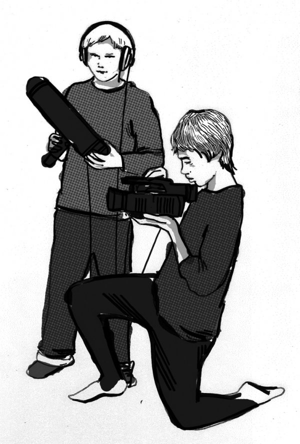

Suunnittelu on koko ohjelman tekoprosessin perusta. Ohjelman hyvä suunnittelu auttaa sisällön rajaamisessa, näkökulmien valinnassa, kuvausten toteuttamisessa sekä leikkaamisessa. Kevyessä ja nopeasti tuotettavassa videotyöskentelyssä on suuri etu, jos materiaalia on kuvattu suunnitellusti, sillä silloin sen leikkaaminen on nopeampaa. Varsinkin jos kuvaukset tehdään nauhalle on huomioitava, että jo pelkästään materiaalin siirtämiseen nauhalta tietokoneelle kuluu sama aika kuin mitä nauhalla on materiaalia (30 min kuvaa = 30 min siirtoaika). Suunnittelun tarkoituksena on selvittää ja päättää, mistä ohjelma kertoo, mitä kuvataan ja ketä/keitä haastatellaan, mitä kalustoa kuvauksiin tarvitaan, sekä milloin ja missä kuvaukset tehdään.

Kuvakäsikirjoitus auttaa ohjelman ja kuvausten suunnittelussa. Piirrosten viereen voi kirjoittaa selventäviä tekstejä.
Hyvä tapa aloittaa suunnittelu on miettiä minkälaisen ohjelman haluat tehdä. Onko kyseessä uutinen tai reportaasi, tapahtumataltiointi, tietoisku, henkilökuva, sketsi tai keskusteluohjelma? Ohjelmatyypin ja tyylin valitseminen helpottaa hahmottamaan, mitä ohjelman tekemiseen tarvitaan ja mistä se koostuu. Suunnitteluvaiheessa on myös hyödyllistä miettiä, mikä on valmiin ohjelman kesto. Lähtökohtaisesti ohjelmatyypin tai tyylin valinta ei rajoita sisältöä vaan lähes mistä tahansa aiheesta voi tehdä kaikennäköistä ohjelmaa.
Ohjelman aihe liittyy luonnollisesti ohjelmatyypin valintaan, joten aiheen ideointi kulkee alusta asti mukana suunnittelussa. Valitse aihe, joka kiinnostaa tai koskettaa sinua. Mieti, mistä näkökulmasta asiaa käsittelet ja mitä haluat ohjelmalla sanoa? Jos aihe on lähtökohtaisesti laaja voit valita punaiseksi langaksi sinua eniten kiinnostavan kysymyksen tai näkökulman ja rakentaa ohjelman sen ympärille. Mitä selkeämpi ohjelman perusidea on, sitä helpompi myös katsojan on päästä ohjelmaan sisään ja kiinnostua aiheesta. Erityisesti jos kyseessä on uutismainen reportaasi tai muu asiaohjelma, tekijän kannattaa yrittää vastata aiheeseen liittyviin kysymyksiin kuten mitä, miksi, kuka / ketkä ja milloin ja tuoda vastaukset esille ohjelmassa mielenkiintoisella tavalla.
Toisaalta tekijänä kannattaa asettua hetkittäin katsojan asemaan ja miettiä esimerkiksi mitä taustatietoja katsoja tarvitsee, jotta hän voi seurata ohjelmaa, mikä tekee ohjelmasta muille kiinnostavan ja miten katsojan mielenkiinto säilyy. Voit tehdä ohjelmasta mielenkiintoisen ja helposti seurattavan suunnittelemalla ohjelmaan riittävästi erilaisia elementtejä, jotka rytmittävät ohjelmaa. Ohjelma voi sisältää haastattelua ja sen kuvitusta, kuvaa jonka taustalla soi musiikki tai muu äänimaisema, näyteltyjä osioita, suoraan kameralle tehtyjä juontoja, tilanteen dokumentointia, voice over -spiikkejä eli selittävää/kertovaa puhetta kuvan alla (vertaa uutisissa toimittajan lukemat selostukset kuvituksen alla), grafiikkaa ja tekstiä.
Ohjelman rakenne voi puolestaan perustua esimerkiksi kronologiseen järjestykseen tai kysymys-vastaus-malliin eli ohjelman alussa esitetään kysymys, johon etsitään ohjelman aikana vastauksia ja lopussa tehdään asioista yhteenveto. Rakenteellisia ratkaisuja on lukematon määrä, mutta pääasia on, että rakenne palvelee ohjelman sisältöä. Lopulliset rakenteeseen liittyvät ratkaisut tehdään usein leikkausvaiheessa.
Sisällön suunnittelu videotuotannossa tarkoittaa myös kuva- ja ääni-ilmaisun suunnittelua. Kuvasuunnittelua auttaa huomattavasti jos sinulla on mahdollisuus käydä kuvauspaikalla ja ottaa sieltä digikuvia. Voit myös visualisoida ohjelman aihetta esimerkiksi kirjaamalla ylös mielikuvia, joita aihe sinussa herättää ja assosioida kuva-aiheita niistä. Hyvä harjoitus on miettiä, miten ohjelman aiheen voisi kertoa pelkästään kuvin. Kuvasuunnittelun tarkoituksena on siis suunnitella kuvia, jotka näyttävät ohjelman aiheesta jotakin, mitä ei sanoilla voi kuvata, luovat tunnelmaa tai havainnollistavat esimerkiksi haastattelussa sanottuja asioita.
Äänisuunnittelussa kannattaa huomoida se, millaisia taustaääniä videoon halutaan. Puheen lisäksi on mahdollista äänittää ns. tehosteääniä, esimerkiksi raitiovaunun kolinaa tai oven aukaisemista. Jos ohjelma sisältää musiikkia niin se kannattaa huomoida jo suunnittelussa. Kuvan tapaan äänellä voi luoda lisää merkityksiä videoon. Kuvan ja äänen ei myöskään tarvitse kertoa aina samaa tarinaa yhtäaikaisesti.
Suunnittelutyön tehtyäsi olet siis päättänyt, mistä ohjelma kertoo, miten aihetta käsitellään, sekä miettinyt erilaisia kuvia ja ääniä, joita haluat ohjelmaasi tehdä. Voit havainnoillistaa suunnitelman tekemällä ns. storyboardin eli kuvakäsikirjoituksen. Storyboardissa on tyhjiä ruutuja, joihin voit luonnostella ainakin tärkeimmät ohjelmaan tulevat kuvat. Kuvan viereen voit kirjoittaa lisätietoja siitä, mitä kuvassa tapahtuu ja miten kamera liikkuu. Kuvakäsikirjoitus on hyvä muistilista kuvaustilanteessa ja sen avulla on helppo kertoa myös muille, mitä ohjelmassa tapahtuu. Kuvakäsikirjoitus on hyödyllinen työkalu erityisesti fiktiivisiä ohjelmia ja elokuvia tehtäessä.
Usein ohjelmiin sisältyy yksi tai useampi haastattelu. Haastattelulla voi olla ohjelmassa useampi tehtävä. Haastattelemalla voidaan välittää tietoa, mielipiteitä ja kokemuksia tai se voi tuoda esiin haastateltavan persoonaa. Olipa tehtävä mikä tahansa on tärkeää valita haastateltavat oikein ja esittää heille oikeita kysymyksiä. Haastattelu on hyvä sopia etukäteen ja varmistaa, että haastateltava on valmis puhumaan tekijän toivomasta aiheesta kameralle. Älä kerro valmiita kysymyksiä etukäteen, jotta haastattelutilanteessa säilyisi tietty jännite. Muotoile kysymykset selkeästi ja yksiselitteisesti eli kysy yhtä asiaa kerrallaan. Hyviä kysymyksiä ovat miksi ja miten sillä niihin ei voi vastata kyllä tai ei.
Kysymysten esittämistä voi harjoitella vaikka kaverin kanssa, sillä se auttaa hahmottamaan ovatko kysymykset ymmärrettäviä.
Haastatteluun kannattaa sisällyttää myös ns. lämmittelykysymyksiä, kuten kerro lyhyesti itsestäsi tai mitä olet tehnyt tänään, mitä kuuluu. Näin haastateltava saa hieman aikaa harjoitella mikrofoniin puhumista. Lämmittelykysymykset ovat hyödyllisiä myös kuvaajalle/äänittäjälle, sillä niiden aikana hän voi testata, että ääni kuuluu hyvin ja kuva näkyy.
Yksi tärkein haastattelutilanteeseen liittyvä taito on kuunteleminen, koska vain kuuntelemalla voit tehdä tarkentavia ja kiinnostavia jatkokysymyksiä. Jos et ymmärrä, mitä haastateltava sanoo tai sinulle tulee mieleen joku uusi aiheeseen liittyvä huomio, kysy uudestaan tai esitä jatkokysymys rohkeasti.
Katugallup poikkeaa edellisestä siinä, että haastatteluja ei voi sopia etukäteen. Katugallupissa on erittäin tärkeää muotoilla kysymys niin, että kuka tahansa ymmärtää sen. Kysymyksen tulee olla lyhyt ja ytimekäs. On hyvä huomioida, että ihmiset puhuvat helposti ja mielellään omasta kokemuksestaan käsin, eli katugallupissa kannattaa kysyä nimenomaan mielipidettä, ei faktatietoa. Haastateltavan kokemuksista kysyminen ja käytännön esimerkkien antaminen ovat hyviä keinoja kaikenlaisissa haastattelutilanteissa.

There has been error in communication with Booktype server. Not sure right now where is the problem.
You should refresh this page.